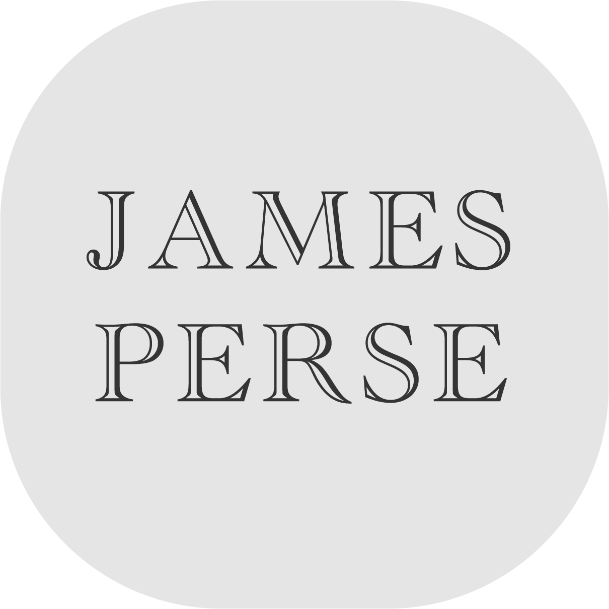

おしゃれの必須アイテム帽子。 ラグジュアリーからお手頃価格なブランドまで、様々なブランドが幅広いアイテムを展開しています。 そこで当サイトでおすすめのブランドをピックアップしてご紹介致します。

ストリートファッションのアイコンでもあるニューエラ(NewEra)は、世界最大級のアメリカのヘッドウェアとアパレルブランドです。ベースボールキャップを扱うブランドの中でも人気があり、アメリカメジャーリーグベースボール唯一の公式選手用キャップサプライヤーでもあります。

1889年、社名を「ハミルトン・カーハート・マニュファクチュア」とし、わずか4台のミシンと5人の従業員でワークウェアの生産をスタートさせます。 最初のプロダクトは、丈夫なダック地とデニムで作られた「オーバーオール」。 これが今日まで続く「Carhartt」ブランド誕生の瞬間です。

「ジェームス パース(JAMES PERSE)」はアメリカのハイクオリティーなカジュアルウェアブランド。 1994年にジェームス・パース(James Perse)がアメリカ・ロサンゼルスでブランドをスタートする。 ジェームス パースはハイクオリティーなカジュアルウェア、特にカットソーが有名。

ロンハーマン(Ron Herman)は、カリフォルニア発のセレクトショップ。 世界中から厳選されたウエアやプロダクト、カフェやトリートメントサロンを展開。 オリジナルブランドも取り揃える。 ロンハーマンは、1976年、アメリカ・ロサンゼルスにあるハリウッドのメルローズアベニューで誕生。